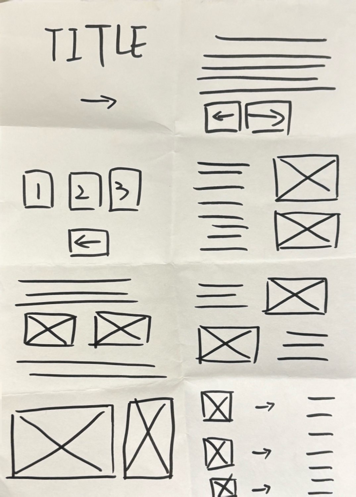

In this Crazy 8s exercise, I explored different ways to design the layout for my workbook website. I quickly sketched several ideas, trying out different ways to organise text, images, and navigation. Some designs are inspired by a magazine layout, while others feel more like a gallery or a slideshow. This activity helped me think about how a web page can be structured and how users move through the content.
